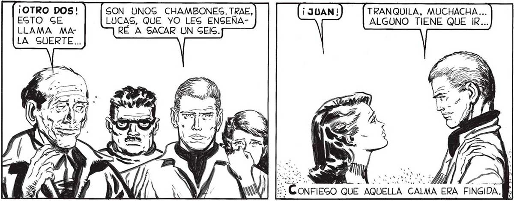

SEGURO QUE | ¡UN DOG! NO HAY CASO, CON LOG DADOG NO TENGO GUERTE... TIRA TÚ, ..DE QUE EN AQUEL MOMENTO ODIABA A 7 FAVALLI POR HABER GACADO UN PUNTO TAN BAJO. Y S y L / d NN , e. a tr ya Y y Ñ y Y % Fue PATÉTICO EL EGFUERZO DE LUCAG POR APARENTAR EL DEGEO DE GANAR. ESTOY GEGURO... ¡OTRO DOS! SON UNOG CHAMBONES. TRAE, TRANQUILA, MUCHACHA... ¿Y cl HABÍAMOS HECHO ALGÚN ERROR? PROEGTO GE LUCAS, QUE YO LES ENSEÑA- ALGUNO TIENE QUE IR... POR DENTRO ME |BARLO EL PRIMERO PODÍA GER LA MUERTE A LLAMA MA- RÉ A SACAR UN GElG. GENTÍA TEMBLAR. | CORTO PLAZO... PERO GEGUÍ APARENTANDO QU LA SUERTE... PORQUE GACAR : ALGO MAG QUE UN DOG, GIGNIFICARÍA TENER QUE GALIR DE LA CAGA ENFUNDADO EN AQUEL TRAJE HERMÉTICO QUE HABÍAMOG FABRE CADO.é Y Gl LA GOMA NO ERA | BAGTANTE AIGLA| CIÓN CONTRA LOG ) JCOPOG DE LA NM MUERTE 2 ERA FINGIDA.M: AU VA EL GEIG...P APRENDAN...
